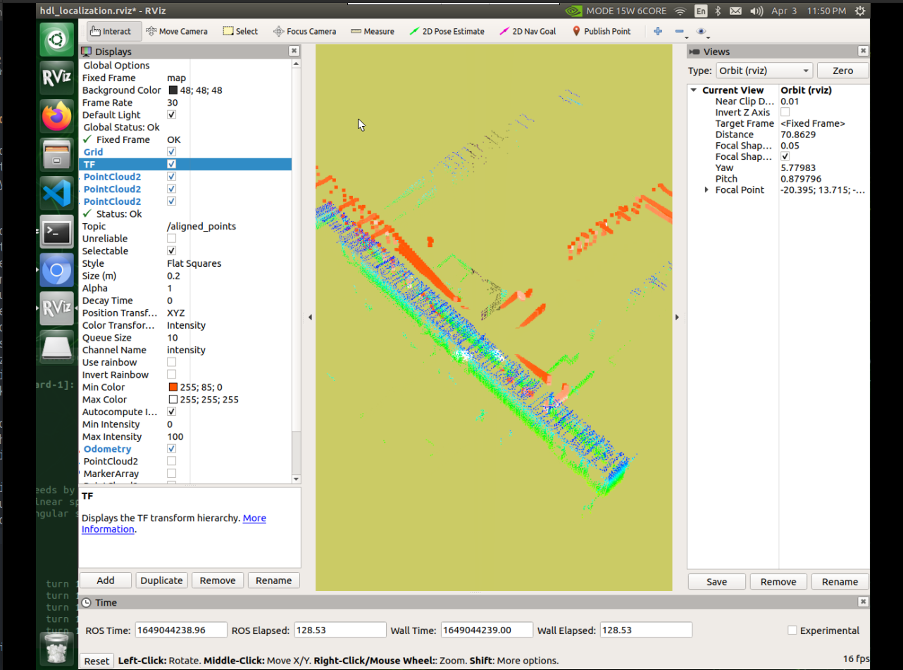
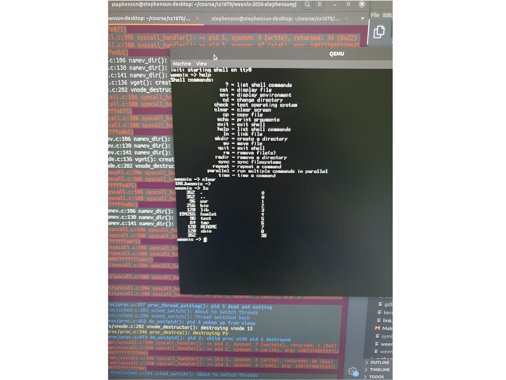
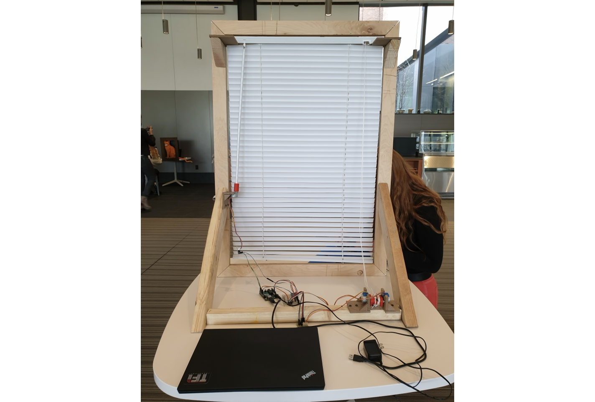
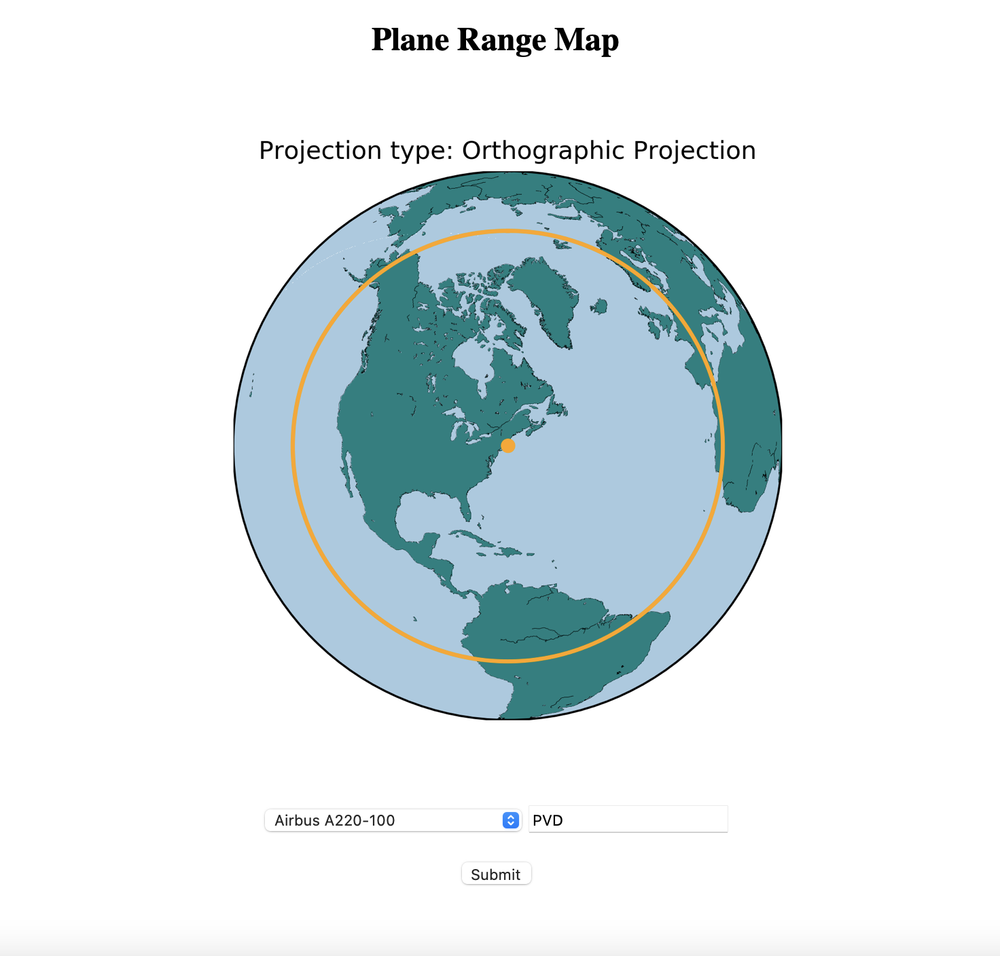
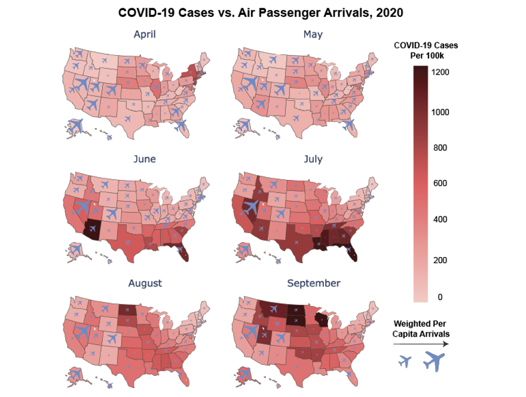

About Me
I am a Software Engineer in the Bing Places Data Infrastructure team, under Microsoft AI. I specialize in building and maintaining geospatial data pipelines that power Bing Maps for both consumers and enterprises. I previously worked at ServiceNow in the Big Data team, and I graduated from Brown University with a Bachelor of Science in Computer Science and Engineering.
My day to day work involves coding in Scala, and I use open source frameworks like Apache Spark, Iceberg, and Airflow. I deeply enjoy building complex systems, and through my work on maps technologies, I aim to improve the way that people explore, discover and navigate the world.
Outside of work, I enjoy getting outdoors to explore new places, whether that is on foot (hiking and running!), in a car, on a train, or in the air. I obtained my Private Pilot License in 2023, and since then I've enjoyed taking my friends up for an aerial tour of the Bay Area. If you can't tell by this point, I'm a huge AvGeek, so if you ever want a trip's flight itinerary planned out, just let me know and I'll make sure to get you the best deal!
Projects

Indoor Robot Navigation with 3D LiDAR
I worked on an independent study project to develop a robot to navigate through a previously mapped indoor environment. A TurtleBot 2 running ROS on board a Nvidia Jetson Xavier was used, together with a Velodyne VLP-16 (”Puck”) LiDAR. I tested various SLAM (Simultaneous Localization and Mapping) and people detection algorithms to enable the robot to navigate autonomously. Check out my project report here.

Weenix - a (barebones) Unix Operating System
As part of the class CSCI 1690 Operating Systems Lab, I worked on a semester long project to build a Unix-like operating system. After 5 phases where we worked on handling processes, drivers, the virtual file system, physical file system and virtual memory, the result was a operating system running on a virtual machine that is able to make system calls, run various commands like ls and cat, and also run user code.

Helios - Smart Blinds and Alarm Clock
As part of ENGN 1931I Design of Robotic Systems, my team and I built a set of smart window blinds that can raise, lower and rotate through voice commands. We also built an alarm clock unit, that when ringing, will also automatically raise the blinds to wake the user up through natural light. We used stepper motors and 2 Arduino Unos to control the blinds and alarm clock respectively, and a HC12 wireless chip to communicate wirelessly between the blinds and alarm clock. BitVoicer was used for the voice communication functionality. Source code and final report available on GitHub.

planerange.me - Hackathon project to visualize aircraft range
A simple web app created in 24 hours during Hack@Brown 2021 with Joshua Neronha and Jay-Young Cho. Allows users to quickly visualize aircraft's range centered around a certain airport using various map projections. Supports >14000 airports and >150 aircraft. Source code available on GitHub.

Analyzing the Impact of commercial travel on COVID-19 rates
As part of CSCI 1951A Data Science, my team and I analyzed the impact of commercial travel on COVID rates in the US. We used various linear and polynomial regression as well as fixed effects models, and showed that there is a positive and nonlinear correlation between air passenger arrivals and new COVID-19 cases. Source code and project poster available on GitHub.

Pi-hole - A network level ad blocker
Ever frustrated by ads (especially on mobile devices)? I was too, so I set up Pi-hole, a network level DNS sinkhole on my Raspberry Pi Zero W to block ads and malware on my home network. When devices use Pi-hole as their DNS server, it blocks requests to any known blacklisted servers, allowing a seamless ad-free experience on all devices connected to the network.
Resume
Download my resume, or if on a desktop, simply view it below. (Embedded PDF may not show up on mobile devices.)
Contact
Feel free to reach out to me through any of these methods!